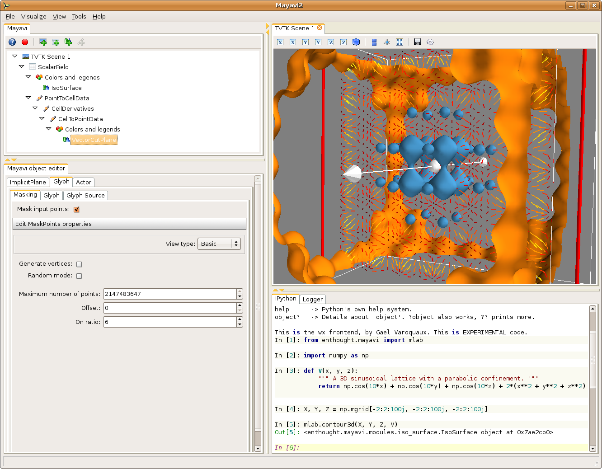
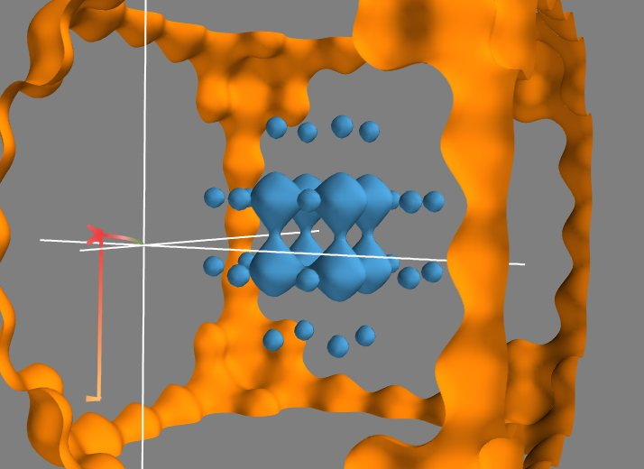

As promised, here is the sequel to the tutorial I posted yesterday on using Mayavi with scipy to understand the trajectories of a particle in a potential. (chances are you are reading this before my previous post. I suggest you first jump to my previous post, and then come back here).
This tutorial shows you how to use the powerfull VTK and Mayavi feature to explore the trajectories in the same potential. However, the tools we are using do not given us as much control on the dynamics of the system, so this time we do not add damping or oscillation of the potential. At the end of the day, the resulting visualization is however much more interactive. Once again, I would like as much feedback as possible, as this is intended for the Mayavi User Guide.
In this example, we create a vector field from the gradient of a scalar field and explore it interactively. This example shows you how to do some operations similar to the previous example, but interactively, using the filters and module. This approach requires a better knowledge of Mayavi and the VTK filters, but the big gain is that the resulting visualization can be explored interactively.
First, let us create the same scalar field as the previous example:. We open Mayavi and enter the following code in the Python shell:
from enthought.mayavi import mlab
import numpy as np
def V(x, y, z):
""" A 3D sinusoidal lattice with a parabolic confinement. """
return np.cos(10*x) + np.cos(10*y) + np.cos(10*z) + 2*(x**2 + y**2 + z**2)
X, Y, Z = np.mgrid[-2:2:100j, -2:2:100j, -2:2:100j]
mlab.contour3d(X, Y, Z, V)
As in the previous example, we can change the color map and the values chosen in the isosurfaces.
We want to take the gradient of the scalar field, to create a vector field. To do this we are going to use the CellDerivatives filter, that takes derivatives of the data located in the cells (that is, between the points, see *Creating data for Mayavi*). For this, we first need to interpolate the data from the points where it is located to the cells, using a PointToCellData filter. We can then apply our CellDerivatives filter, and then a CellToPointData filter to get point data back. (remark: if you are not using the latest Mayavi from SVN - 3.1.0 - you need to enable the ‘pass data’ option in the two CellToPointData and PointToCellData filters).
To visualize the vector field, we can use a VectorCutPlane module. The resulting vectors are too large, and we can go to the Glyph tab, (and the Glyph tab in this tab), to reduce the scale factor to 0.2. The vector field is still too dense, therefore we go to the Masking tab to enable masking, mask with an on ratio of 6 (one arrow out of 6 is masked) and turn off the random mode.
{kind=link}
To have nice colors, we also changed the color map of the vector field by going to the Colors and legend node just above the VectorCutPlane, and choosing a look up table in the VectorLUT tab, as there can be different color maps for vector data and scalar data.
Unlike the previous example, we can play with all the parameters in the dialog box, like masking, or select color_by_scalar in the Glyph tab, to display the value of the potential. We can also move the cut plane used to display the vectors by dragging it.
Now that we have a 3D vector field, we can also use Mayavi to integrate the trajectory of a particle in it. For this we can use the streamline module. It displays trajectories starting from the vertices of a seed surface. We choose (in the Seed tab) a Point Widget as a seed. We can then move the seed point by dragging it along in the 3D scene. This allows us to explore the trajectories in the potential created by the initial scalar field. In our case, all the trajectories end up in a local potential minimum, and moving the seed point along lets us see in which minimum each point will fall into, in other world the basin of attraction of each local minimum.
 Go Top{kind=link}